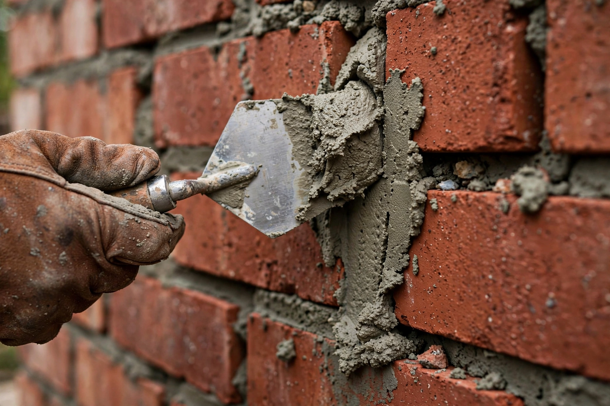

Mortar is a workable paste used to bind building blocks such as stones, bricks, and concrete masonry units, to fill and seal the irregular gaps between them, spread the weight of them evenly, and sometimes to add decorative colors or patterns to masonry walls. In its broadest sense, mortar includes pitch, asphalt, and soft mud or clay.

| Mortar | |
|---|---|
| Ingredients | Cement or lime, sand, water |
| Uses | Bricklaying, stonework, plastering, pointing |
| Types (ASTM) | M, S, N, O, K |
Early mortars were mud and clay; gypsum mortar was used in ancient Egypt, and lime mortar in Greek, Roman and many other traditions. The Romans used pozzolana volcanic ash to make hydraulic mortar and concrete. Portland cement mortar, invented in the 19th century, gives greater strength but can damage soft historic brick if used for repointing.
Modern mortar is a mixture of a binder (cement and/or hydrated lime), fine aggregate (sand), and water. Types M, S, N and O differ in compressive strength and are chosen according to structural needs and exposure.
Mortar is applied with a trowel, joints are tooled, and it cures by hydration. Repointing replaces deteriorated mortar in old masonry.